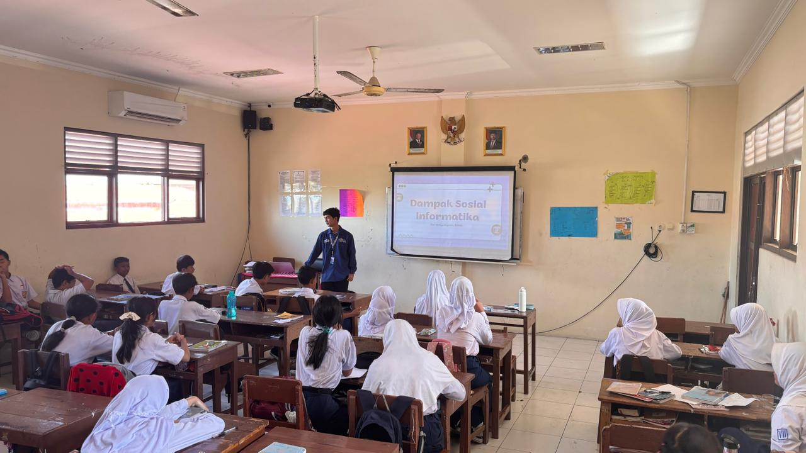
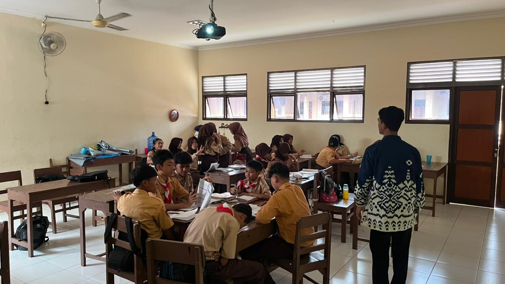
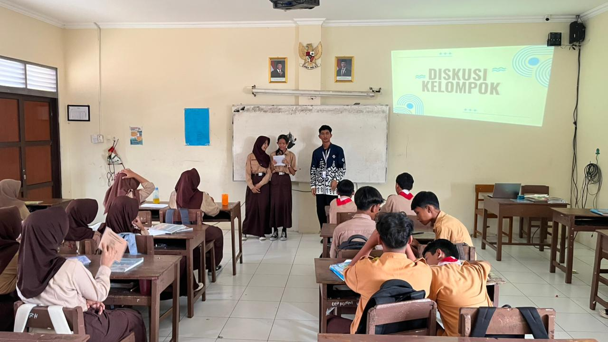
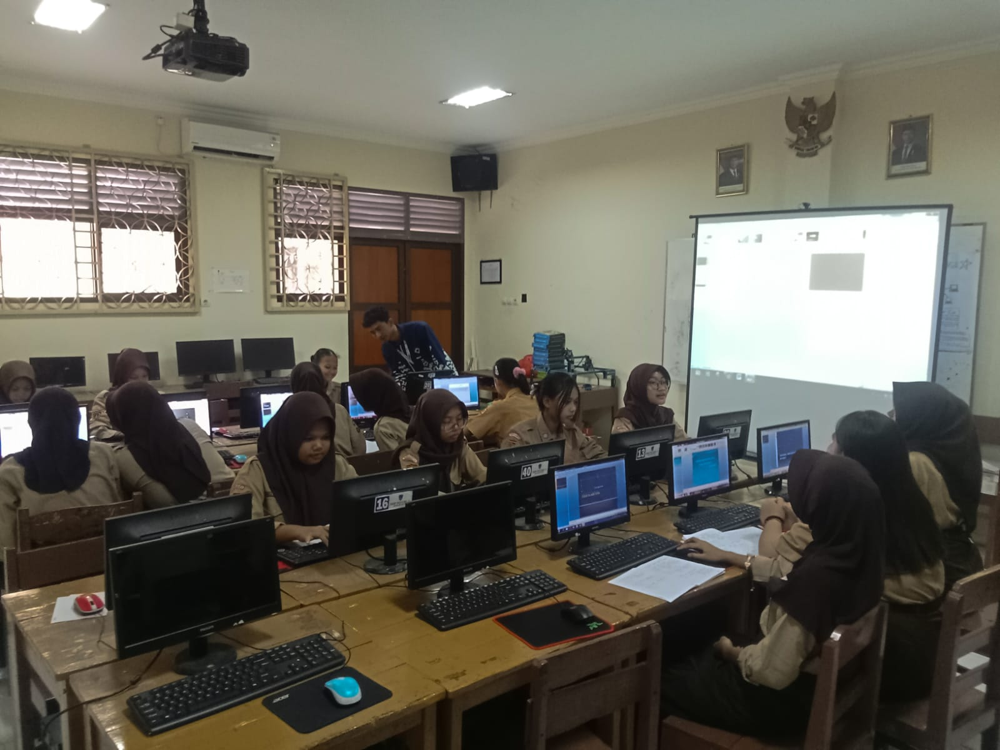
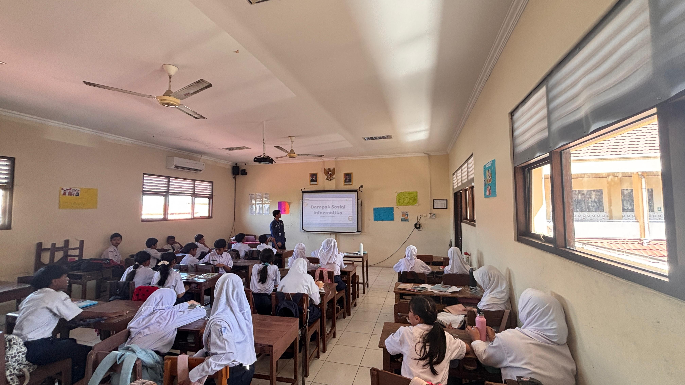
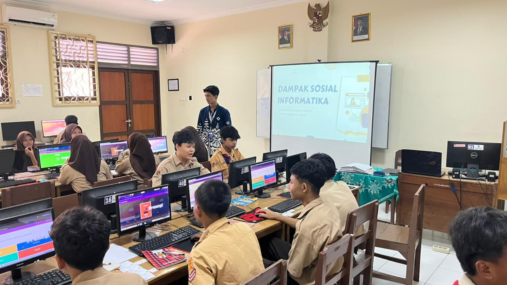

Analisis Artefak Produk
Analisis mendalam terhadap perencanaan dan produk perangkat pembelajaran yang telah diimplementasikan selama PPL Terbimbing dalam 4 aspek evaluasi utama.
Kendala Selama Proses Penyusunan
Tantangan terbesar terletak pada sinkronisasi pemetaan **Differentiated Learning** untuk materi Dampak Sosial Informatika (DSI). Menyusun instrumen evaluasi and lembar kerja yang adil, objektif, and mampu memfasilitasi keragaman gaya belajar siswa (audio-visual and kinestetik) di lingkungan SMK membutuhkan waktu serta validasi rubrik deskriptif yang berlapis.
Teori & Konsep Pedagogi yang Diadopsi
Rancangan produk mengadopsi secara ketat **Teori Konstruktivisme Sosial (Lev Vygotsky)** melalui pemicu *Zone of Proximal Development* (ZPD) berbantuan *Peer Scaffolding* kelompok, serta kerangka kerja **TPACK** (*Technological Pedagogical Content Knowledge*). Materi diintegrasikan langsung menggunakan media visual interaktif Canva and platform cek fakta online terpercaya.
Faktor Keberhasilan Penerapan Produk
Kunci keberhasilan implementasi ini didorong oleh ketersediaan fasilitas laboratorium komputer sekolah yang memadai and kejelasan pertanyaan pemantik yang merangsang indikator **Higher Order Thinking Skills (HOTS)** siswa. Desain LKPD yang interaktif and kontekstual terbukti menaikkan kurva atensi, partisipasi, serta kemandirian eksplorasi murid.
Rencana Adaptasi Kelas Berbeda
Jika produk ini diterapkan pada kelas dengan keterbatasan infrastruktur internet/proyektor, komponen pengerjaan berbasis platform online akan dialihkan (*shifting*) menggunakan metode **Analogi/Unplugged Informatika**. Lembar studi kasus LKPD akan dicetak fisik (*hardcopy*) and simulasi alur etika digital dimodelkan lewat bermain peran (*role-play*) interaktif di kelas.
Artefak Pembelajaran
Koleksi produk administrasi Modul Ajar, Perangkat RPP, Media Canva, dan Lembar Kerja Siswa (LKPD) yang telah dipisah secara spesifik per siklus.
Penilaian GP & DPL
Hasil penilaian objektif instrumen Lampiran 7 (Penyusunan Perangkat) dan Lampiran 8 (Praktik Mengajar) dari Guru Pamong dan DPL.
Evaluasi Siklus 1
Siklus IRefleksi GP: Modul ajar esensial sudah runtut, namun manajemen waktu pada sintaks diskusi heterogen siswa SMK perlu diperketat.
Evaluasi Siklus 2
Siklus IIRefleksi GP: Penggunaan media infografis Canva sangat membantu visualisasi materi siber, partisipasi aktif kelompok naik tajam.
Evaluasi Siklus 3
Final Mandiri 🏆Refleksi GP: Penerapan diferensiasi produk pada LKPD Siklus 3 sangat matang. Menunjukkan kapasitas performa guru profesional tulen.
Model Guru yang Dituju
Orientasi Pengembangan Profesionalitas
Sebagai mahasiswa pendidikan profesi, saya merancang misi yang ingin dituju serta memetakan ragam kompetensi dan karakter guru yang ingin dibangun untuk menuju profil guru profesional seutuhnya. Melalui program PPG Prajabatan, komitmen ini diwujudkan guna menghadirkan pembelajaran informatika inklusif yang berdampak langsung pada tumbuh kembang kemandirian bernalar kritis murid.
Misi & Komitmen Karakter Guru Profesional
Misi Pendidik
Merancang program pengajaran Informatika berbasis studi kasus kontekstual (*Problem-Based Learning*), mengeksplorasi ekosistem kecerdasan buatan (AI) secara bijak, serta mendampingi siswa.
Kompetensi Inti (Pedagogik & TPACK)
Menguasai materi bidang studi Informatika (Algoritma, Jaringan, Dampak Sosial Informatika) yang selaras dengan keterampilan penyusunan instrumen evaluasi yang adil dan transparan.
Karakter Guru Unggul
Membangun watak kepribadian pendidik yang kreatif, adaptif, humanis, kolaboratif, serta senantiasa membuka diri untuk merefleksikan setiap tindakan belajar.
Galeri Kegiatan PPL





